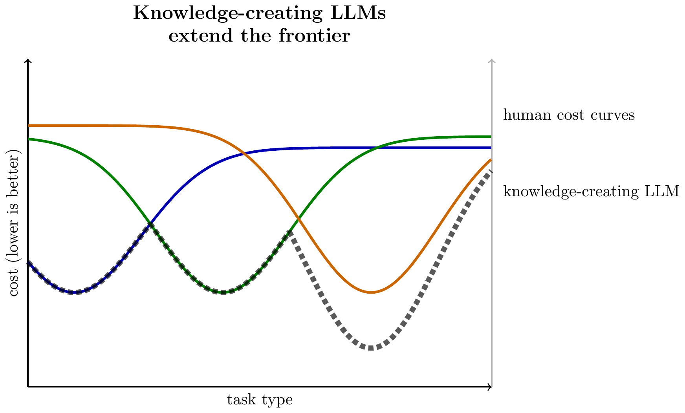

Thanks to Zoë Hitzig & Parker Whitfill, among others, for helpful comments.
- It’s useful to make a distinction between two types of LLMs:
-
Knowledge-sharing LLMs. Traditionally LLMs have been trained with human judgment as the ground truth, as a consequence they rarely exhibit superhuman performance. Their economic value mainly comes from sharing existing knowledge, and the natural business model is to sell access broadly.
Knowledge-creating LLMs. Recently LLMs have been trained against the real world, as a consequence they can extend the limits of human knowledge. The demand for new knowledge is different from the demand for old knowledge, and there’s reason to expect LLM-creators to sell access exclusively.
Obviously it’s a continuum but we’re clearly setting out on the trajectory from the first to the second, and I haven’t seen much discussion of the implications. I expect that the 2026 impacts of AI will be dominated by these considerations.
Below I give a longer discussion of this distinction, implications for IP, and a galaxy-brain theory that there are only a few dozen deep problems in the world. I sketch some considerations for a more formal economic model.
Knowledge-Sharing vs Knowledge-Creating LLMs
- Knowledge-sharing LLMs.
-
I find it is useful to think of LLMs as lowering the price of sharing existing human knowledge (see some of my previous writing on this: AI & Imitation, a pocket model of AI).
Traditionally LLMs have been trained with human judgment as the ground truth, using labels from paid raters or from customers. As a consequence they can answer questions and solve problems up to the limits of human expertise but rarely beyond (with some exceptions, see the literature on LLM Transcendence, Abreu et al. (2025)).
If we model the economic effects of LLMs as coming from sharing existing knowledge, recorded in the training data, this has a number of implications that seem to fit the data.1
LLM use will be higher among those junior in their careers, facing problems that are new to them.
LLMs will be disproportionately used by people outside their area of expertise, e.g. lawyers will use them relatively more for medical questions, doctors will use them relatively more for legal questions.
LLMs will be disproportionately used in well-documented domains, e.g. relatively more for popular programming languages than for proprietary programming languages.
LLMs will decrease knowledge rents – the premium earned by people and firms whose value comes from knowledge.
LLMs will increase home production – LLMs let you solve problems yourself (see our ChatGPT paper, Chatterji et al. (2025)), insofar as this substitutes for market-provided knowledge this can decrease measured GDP.
LLMs decrease the returns to innovation and news-gathering, because they increase the speed of knowledge diffusion and thus diminish the rents that can be earned from new knowledge.
LLM use has high fixed costs (collecting the knowledge) and low marginal costs (sharing the knowledge). The returns to tokens on an individual problem rapidly diminish when you hit the frontier of existing knowledge. One ChatGPT query can tell me what an expert would think about my problem, additional ChatGPT queries have much less use.
- Knowledge-creating LLMs.
-
Over the past 18 months it has become much more popular to train LLMs directly against a source of ground truth, e.g. Reinforcement Learning against Verifiable Rewards (RLVR). Accompanying this there has been a steadily increasing stream of announcements of new discoveries by LLMs.
New LLM-based discovery techniques (e.g. AlphaEvolve (Novikov et al. (2025)), TTT-Discover (Yuksekgonul et al. (2026))) are distinct from prior AI discovery applications (e.g. AlphaFold, AlphaTensor) in that they are general methods, they can relatively quickly be adapted to any arbitrary optimization problem.
Some potential applications for knowledge-generating inference: (1) optimize every part of the AI R&D and serving stack; (2) do drug discovery; (3) discover new algorithms which can be used in new software (e.g. new codecs, new scheduling algorithms); (4) build better trading algorithms; (5) if you have a sufficiently high-quality verifier to human preferences, then build very high-quality cultural products, e.g. movies.
Knowledge-creating LLMs will differ from knowledge-sharing LLMs in a number of ways:
Knowledge-creating LLMs will have qualitatively different benchmarks: instead of seeing if they can answer questions which we already know the answer to (most existing benchmarks), we want them to answer new questions, e.g. solve an unsolved mathematical problem (FrontierMath Open Problems) or set a new record on an optimization problem (e.g. GSO-bench, Shetty et al. (2025)). We can use these new frontier benchmarks are indices for capability, but they are more challenging to interpret because the frontier is always moving.
Knowledge-creating LLMs have high returns to compute on individual problems, unlike knowledge-sharing LLMs for which returns asymptote quickly. It can be worth spending billions of tokens to solve a single problem if the solution is generally applicable.
- The demand for new knowledge is much less elastic than the demand for existing knowledge because there are high returns to exclusivity of new knowledge. Thus LLM-providers are likely to either (1) use the knowledge themselves; or (2) license the new knowledge to partners, rather than expose the knowledge-generation technology through a general-purpose API. Sarah Friar, OpenAI’s CFO, said in January 2026:
“As intelligence moves into scientific research, drug discovery, energy systems, and financial modeling, new economic models will emerge. Licensing, IP-based agreements, and outcome-based pricing will share in the value created.”
- Will knowledge-creation be bottlenecked on data?
- A common claim is that AI knowledge-creation will be bottlenecked on the ability to run new experiments. E.g. an automated biologist still needs a lab (Amodei (2024)), and an automated AI researcher will still need a lot of GPUs to do experiments. Whether this is true depends on the shape of the optimization landscape. If the world is intrinsically high-dimensional, then there is no substitute for collecting data. But if there exists a low-dimensional structure then there are high returns to just thinking harder (more discussion in an earlier post). We have found many domains which appeared to be high-dimensional, but turned out to be intrinsically low-dimensional.
A Visual Illustration
Here we draw the cost for a set of 3 humans across a range of tasks, assuming each has a specialty area where they have the lowest labor-cost. The knowledge-sharing LLM aggregates knowledge, and so is the lower bound across all three agents.
We can then illustrate a knowledge-creating LLM as pushing below the human frontier at some set of tasks:

There are Only a Dozen Deep Problems
- If you squint, a billion problems resolve into just a dozen common problems.
-
In many domains we can reduce the set of problems down to a much smaller set of equivalence-classes or canonical problems. We can then consider problem-solving as having two parts: (1) map to a canonical problem; (2) make progress on that canonical problem.
Consider three types of problems which LLMs are often asked to solve:
- (1) Constraint-satisfaction problems.
- Optimization theory textbooks will often have two types of results (1) proofs on the optimality of certain algorithms; (2) proofs that one type of problem is logically equivalent to another type of problem (e.g. a very large class of problems are equivalent to 3SAT, or can be reduced to 3SAT in polynomial time). Some algorithms are known to be optimal but many others are being continually improved.
- (2) Factual problems.
- We can reduce a factual question into (1) find the documented facts that are relevant to this question; (2) infer the answer from those facts. Once you have collected the existing documented facts you hit a ceiling, which can only be advanced by collecting more facts.
- (3) Statistical inference problems.
- For many classes of supervised learning problems there exists an existing “best practice”, e.g. a recent article says “Over hundreds of Kaggle competitions, we’ve refined a playbook that consistently lands us near the top of the leaderboard”.
- This is a difficulty for LLM benchmarking.
-
The mapping between idiosyncratic and canonical problems is a difficulty for LLM benchmarking. If each problem can be mapped to a canonical problem, and there exists a best-known-algorithm for each of those canonical problems, then it’s difficult to test the model’s intelligence. A reasonably smart LLM will know how to map a new problem into a canonical problem, and will know the textbook best-practice for that canonical problem (XGboost, ARIMA, gaussian process, branch-and-cut, PPO, etc.). Thus we either have to devise problems sufficiently weird that it’s difficult to map them to textbook problems, or instead ask LLMs to advance the knowledge frontier on one of the existing canonical problems.
The remaining good domains for LLM benchmarking are tasks that are an emulsion of data and logic. They’re neither pure statistical inference nor pure deductive reasoning, but require both. Complex video games with a rich state-space are a good example (VideoGameBench appears to be far from saturated), also rich simulated real-world environments like VendingBench.
- Labs will spend a lot on fixed inference, a little on variable inference.
- If this perspective is accurate then it has deep implications for the economics of AI: the marginal cost of solving an idiosyncratic problem is small (you just need to map it to one of the canonical problems, and apply that solution), but there’s very high value in making progress on the canonical problems. So we would expect AI labs to be spending huge amounts of compute on advancing the SoTA on the few deep problems of the world, and providing a service that solves idiosyncratic problems very cheaply.
- There will be a land-grab in intellectual property.
- If we maintain the same intellectual property law then this implies there will be a land-grab: firms will rush to be the first to discover new technologies which they can patent. But it seems plausible that the exclusivity will be inefficient, i.e. it wasn’t necessary to motivate the research, the new technology would’ve been discovered anyway.
Appendix
- Recent examples of LLM optimization ability:
-
Recent examples of
Novikov et al. (2025) (Alpha-Evolve):
“AlphaEvolve orchestrates an autonomous pipeline of LLMs, whose task is to improve an algorithm by making direct changes to the code. … When applied to optimizing critical components of large-scale computational stacks at Google, AlphaEvolve developed a more efficient scheduling algorithm for data centers, found a functionally equivalent simplification in the circuit design of hardware accelerators, and accelerated the training of the LLM underpinning AlphaEvolve itself. Furthermore, AlphaEvolve discovered novel, provably correct algorithms that surpass state-of-the-art solutions on a spectrum of problems in mathematics and computer science, significantly expanding the scope of prior automated discovery methods (Romera-Paredes et al., 2023).”
Yuksekgonul et al. (2026) (TTT-Discover):
“We report results for every problem we attempted, across mathematics, GPU kernel engineering, algorithm design, and biology. TTT-Discover sets the new state of the art in almost all of them: (i) Erdős’ minimum overlap problem and an autocorrelation inequality; (ii) a GPUMode kernel competition (up to 2×faster than prior art); (iii) past AtCoder algorithm competitions; and (iv) denoising problem in single-cell analysis. Our solutions are reviewed by experts or the organizers.”
The Opus 4.6 system card reports results on a kernel optimization task. It’s notable that their internal scaffold shows much higher performance than their public model.
“Claude Opus 4.6 obtained a 427× best speedup using an experimental scaffold and a 190× best speedup using our standard scaffold.
Economic Model Sketch
- A promissory note.
- I’m working on a more full-specified model, but I wanted to get this blog post out sooner. I feel this area is incredibly ripe for modelling, I’d love to find a theorist collaborator, & it’d make me very happy if someone else writes something about this.
- Embodied and disembodied knowledge.
- I find it useful to distinguish between embodied knowledge (the knowledge only applies to my own labor), and disembodied knowledge (I can scale my knowledge, e.g. hiring other workers or building machines). Knowledge-sharing seems to mostly apply to embodied knowledge, e.g. I use ChatGPT to learn medical knowledge I can use myself. Knowledge-creation is more applicable to disembodied knowledge, e.g. firms innovate.
- A simple model of disembodied knowledge.
-
In a very simple model we have:
- Aggregate output is determined by the best knowledge.
- Aggregate profit is determined by the distance between the best and second-best knowledge.
Suppose there are \(L\) people, each has 1 unit of labor, and there is just one good. Each person knows some subset of recipes \(R_i\subseteq R\), and each recipe yields some cost of producing the good from labor, \(c(r)\). Then person \(i\)’s effective cost \(c_i\) is the lowest cost among the recipes that they know. Each person can rent labor from others to produce the consumption good, and we assume labor is allocated via Bertrand wage competition among recipe-holders; workers are price-takers and work for the highest wage.
We can order the costs from lowest to highest, \(c_{(1)}\leq \cdots \leq c_{(L)}\). In equilibrium the lowest-cost agent will rent the labor of all others, produce the good at the lowest cost \(c_{(1)}\), and then sell the good back at a price equal to the second-lowest cost (\(1/c_{(2)}\)), and keep the remainder as profit:
-
\[\begin{aligned} \text{output} &= \frac{1}{c_{(1)}}L && \text{(the best recipe)}\\ \text{profit} &= \left(\frac{1}{c_{(1)}}-\frac{1}{c_{(2)}}\right)(L-1) && \text{(diff bw 1st and 2nd-best recipe)} \end{aligned} \]
Two simple implications:
Knowledge-sharing spreads output. If we share the best recipe among the whole population, now \(c'_{(2)}=c'_{(1)}=c_{(1)}\). Total output is unchanged, but profit is eliminated, and the output is spread equally among all actors.
Knowledge-creation increases output. Suppose we can improve the best recipe, \(c'_{(1)}<c_{(1)}\). Total output will increase. The effect on profit will depend on (1) whether the identity of the lowest-cost producer changes; and (2) the degree of improvement.
We then wish to turn to the market for knowledge. The answers are somewhat sensitive to the knowledge-seller’s ability to commit & exclude knowledge-sharing. But broadly it’s clear that the demand for new knowlege is much less elastic than the demand for existing knowledge: it’s far more valuable to be the sole owner of new knowledge.
References
Abreu, Natalie, Edwin Zhang, Eran Malach, and Naomi Saphra. 2025. “A Taxonomy of Transcendence.” https://arxiv.org/pdf/2508.17669.pdf.
Amodei, Dario. 2024. “Machines of Loving Grace: How AI Could Transform the World for the Better.” October 2024. https://www.darioamodei.com/essay/machines-of-loving-grace.
Chatterji, Aaron, Thomas Cunningham, David J. Deming, Zoe Hitzig, Christopher Ong, Carl Yan Shan, and Kevin Wadman. 2025. “How People Use ChatGPT.” Working Paper 34255. National Bureau of Economic Research. https://doi.org/10.3386/w34255.
Novikov, Alexander, Ngân Vũ, Marvin Eisenberger, Emilien Dupont, Po-Sen Huang, Adam Zsolt Wagner, Sergey Shirobokov, et al. 2025. “AlphaEvolve: A Coding Agent for Scientific and Algorithmic Discovery.” arXiv Preprint arXiv:2506.13131. https://doi.org/10.48550/arXiv.2506.13131.
Shetty, Manish, Naman Jain, Jinjian Liu, Vijay Kethanaboyina, Koushik Sen, and Ion Stoica. 2025. “GSO: Challenging Software Optimization Tasks for Evaluating SWE-Agents.” https://arxiv.org/pdf/2505.23671.pdf.
Yuksekgonul, Mert, Daniel Koceja, Xinhao Li, Federico Bianchi, Jed McCaleb, Xiaolong Wang, Jan Kautz, et al. 2026. “Learning to Discover at Test Time.” arXiv Preprint arXiv:2601.16175. https://test-time-training.github.io/discover.pdf.
Footnotes
Many other technologies share knowledge – speaking, writing, printing, the internet – LLMs just continue this progression but further lower the costs of sharing.↩︎
Citation
BibTeX citation:
@online{cunningham2026,
author = {Cunningham, Tom},
title = {Knowledge-Creating {LLMs}},
date = {2026-02-06},
url = {tecunningham.github.io/posts/2026-01-29-knowledge-creating-llms.html},
langid = {en}
}
For attribution, please cite this work as:
Cunningham, Tom. 2026. “Knowledge-Creating LLMs.” February
6, 2026. tecunningham.github.io/posts/2026-01-29-knowledge-creating-llms.html.